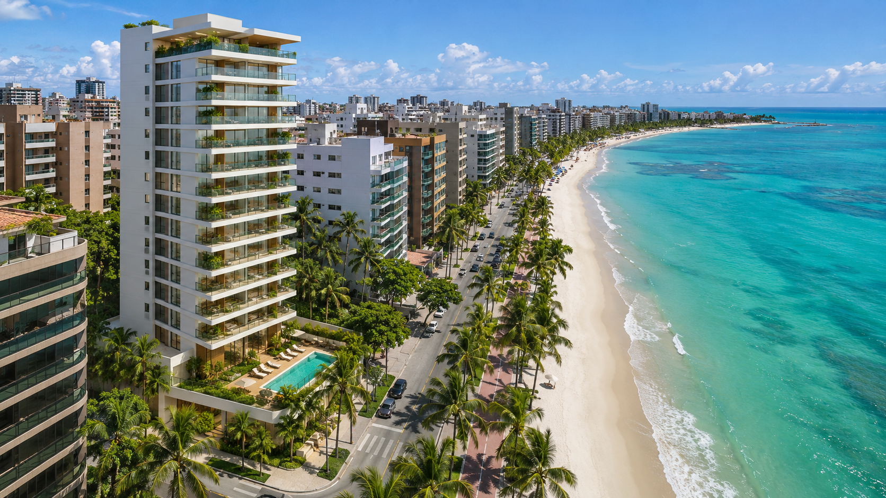

VISTA DO EDIFÍCIO
⌂ 4 residências
UM NOVO OLHAR SOBRE
Ponta Verde.
Explore as residências e imagine sua vida perto do mar.
01 / 01 Vista aérea ilustrativaSelecione um pavimento ou escolha uma residência ↗
EXPLORE O EDIFÍCIO
Residências.
Encontre sua perspectiva em Ponta Verde.
As unidades, áreas e plantas são exemplos fictícios para demonstrar a navegação. Não representam informações verificadas do imóvel.